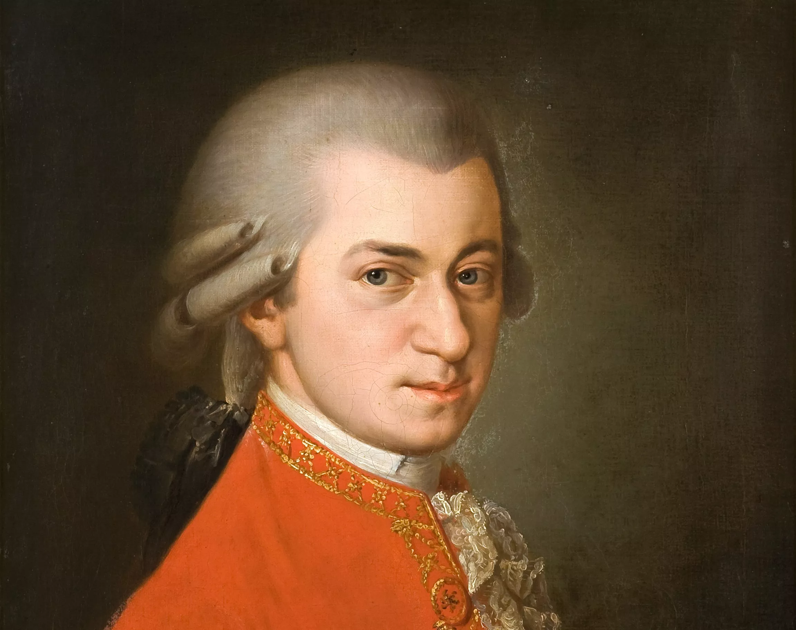
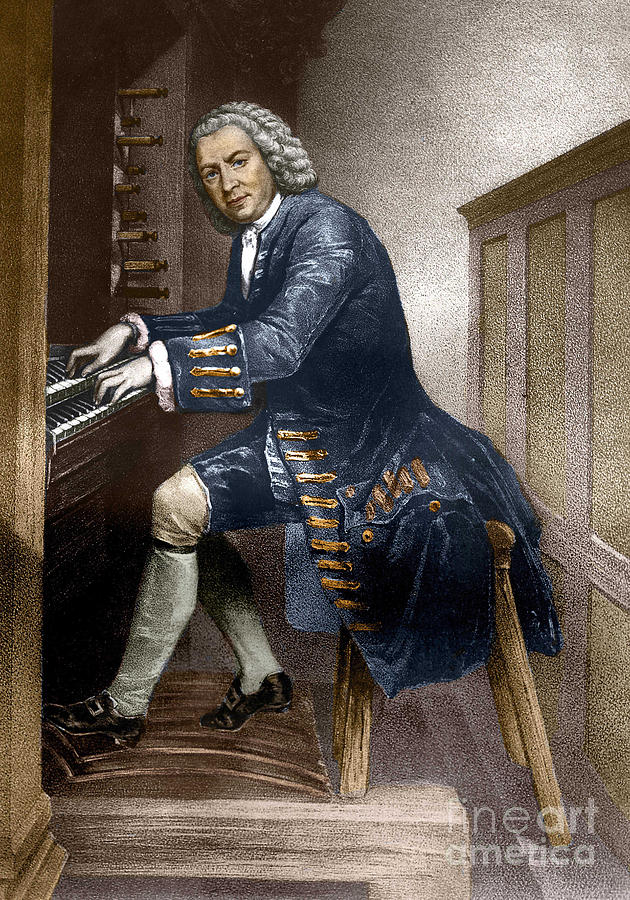

Benefits of Classical Music for Studying
Listening to classical music while studying can improve focus, reduce stress, and enhance memory retention. Here's a nested list demonstrating some key reasons:
- Reduces distractions
- No lyrics to compete with reading or thinking
- Instrumental tracks create a soothing background
- Lowers stress levels
- Calming melodies decrease cortisol
- Promotes relaxation without drowsiness
- Boosts concentration and mood
- May aid information retention
Recommended Composers for Study Sessions
 Start with Baroque or Classical era pieces at around 60 BPM for optimal focus.Sample Playlist
Relaxing Classical Performance
A beautiful performance of Debussy's Clair de Lune – perfect for deep focus.
Explore Music Data: Youtube's Most Streamed Classical Tracks
Here's an interactive Tableau Public visualization exploring popular classical music on Youtube: